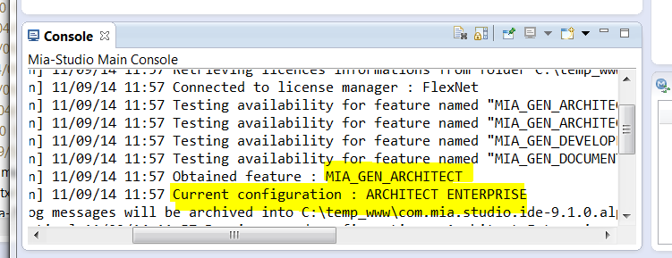

Exercice 0.0
Installer et configurer Mia-Studio
- Installer Mia-Studio si non présent
- Possibilité 1 - conseillé : utiliser un "mia-studio package" prêt à l'emploi
- dézipper le package dispo sous Alma2016\Installateurs\Mia-Studio9.2.1\packages
- Possibilité 2 : utiliser un "update site" pour installer dans votre eclipse (kepler, luna, mars ou neon)
- dans eclipse, menu "Help>Install New Software..."
- bouton "Add", puis bouton "Local", et aller chercher le dossier Alma2016\Installateurs\Mia-Studio9.2.1\updatesite
- cocher les categories "Mia-Studio" et "Mia-Studio utils & samples"
- Configurer Mia-Studio pour pointer sur le fichier de licence temporaire mia.lic(windows) ou license.dat(linux/MacOs) fourni
- pour le package Mia-studio : deposer le fichier dans /licenses
- pour un eclipse ave update site Mia-studio : aller dans Windows>Preferences, puis section Mia-Software>Mia-Studio>Licences, puis aller chercher emplacement fichier mia.lic/license.dat, puis appuyer sur "Refresh", puis selectionner "Architect Enterprise"
- Verifier au redemarrage dans la console Mia-studio que l'outil démarre en mode "Architect Enterprise"
